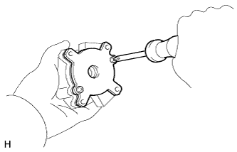

ВАКУУМНЫЙ НАСОС (для моделей с 5L-E) > РАЗБОРКА |
| 1. СНИМИТЕ ШКИВ ВАКУУМНОГО НАСОСА |
Зажмите вакуумный насос в тисках, используя мягкие губки, а затем снимите контргайку шкива и шкив.
| 2. СНИМИТЕ ШТУЦЕР ВАКУУМНОГО ШЛАНГА ВАКУУМНОГО НАСОСА |
Зафиксируйте обратный клапан в сборе с помощью SST, а затем выверните болт-штуцер и снимите штуцер вакуумного шланга и 2 прокладки.
| 3. СНИМИТЕ ОБРАТНЫЙ ВАКУУМНЫЙ КЛАПАН ТОРМОЗНОЙ СИСТЕМЫ В СБОРЕ |
Снимите обратный клапан в сборе и прокладку.
| 4. СНИМИТЕ ТОРЦЕВУЮ КРЫШКУ ВАКУУМНОГО НАСОСА |
Выверните 4 винта и снимите торцевую крышку.
| 5. СНИМИТЕ ВАЛ ВАКУУМНОГО НАСОСА |
С помощью молотка с пластмассовым покрытием выбейте вал вакуумного насоса вместе с подшипником.
| 6. СНИМИТЕ СТОПОРНОЕ КОЛЬЦО |
Снимите стопорное кольцо с вала вакуумного насоса.
| 7. СНИМИТЕ ПОДШИПНИК ВАКУУМНОГО НАСОСА |
С помощью пресса выпрессуйте подшипник с вала ротора.
| 8. СНИМИТЕ ЛОПАСТЬ ВАКУУМНОГО НАСОСА |
|  |
Выверните 2 винта и снимите торцевую пластину.
 |
Снимите ротор и 5 лопастей насоса.
| 9. СНИМИТЕ УПЛОТНИТЕЛЬНОЕ КОЛЬЦО |
Снимите кольцевое уплотнение с корпуса.
| 10. СНИМИТЕ САЛЬНИК |
Извлеките сальник с помощью отвертки.